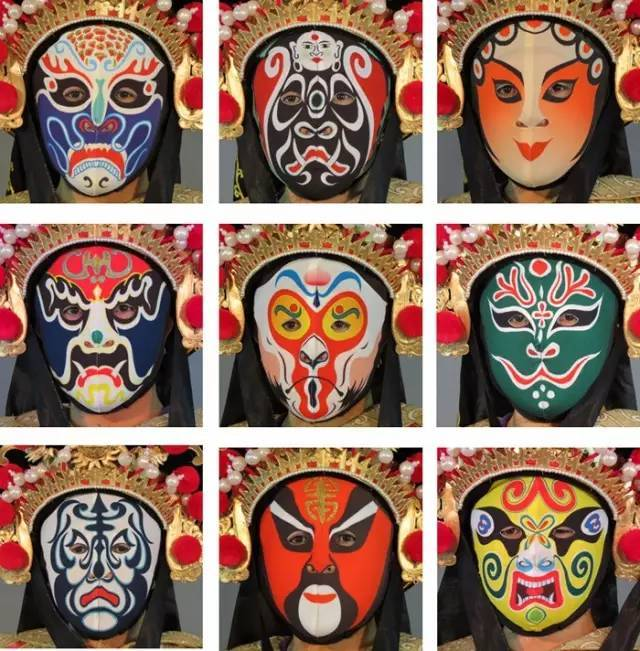
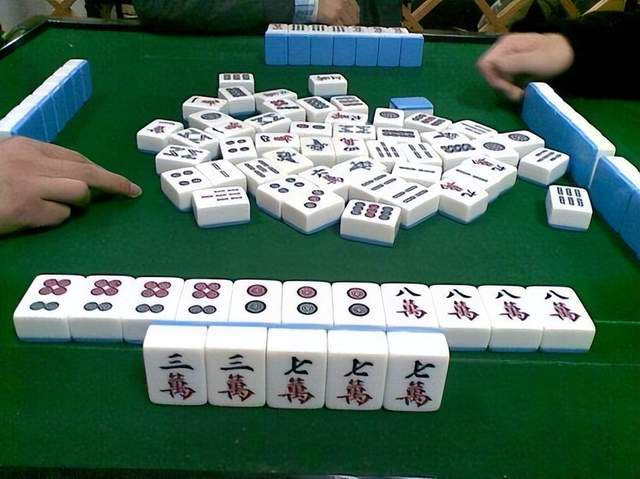
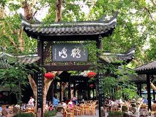
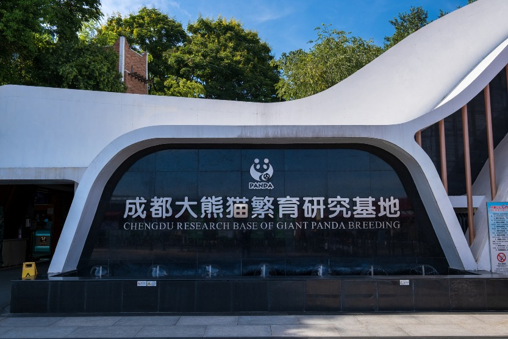
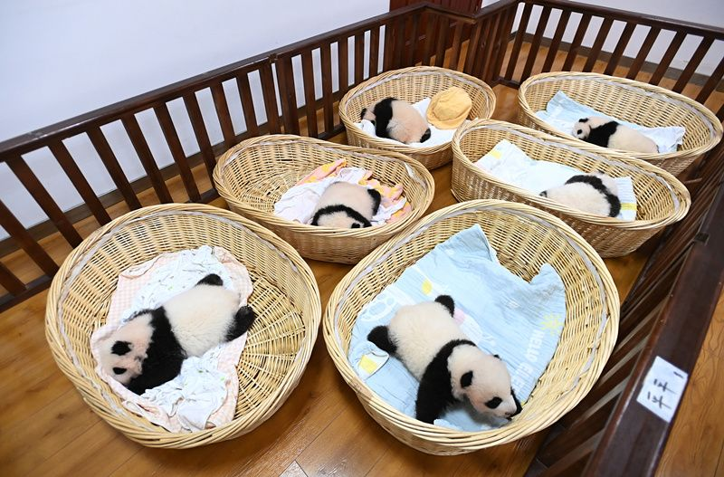

Numbing-Spicy Hot Pot
Chengdu hotpot is a sensory explosion: beef tallow broth, mountains of chili, Sichuan peppercorn, and fresh tripe. Local secret: dip in garlic oil and finish with a bite of fried rice.

Dan Dan Noodles (担担面)
Street-side legend: chewy noodles topped with minced pork, preserved vegetables, sesame paste, and chili oil. The perfect umami balance.

Kung Pao Chicken
A sweet-sour-spicy wok masterpiece with peanuts and dried chilies. Originated from a Qing dynasty governor in Sichuan.
Chuan Chuan (串串香)
Skewers of meat & veg boiled in spicy broth, then dipped in dry spice mix. A late-night ritual in Chengdu's backstreets.
Gaiwan Tea Ceremony
Loose leaf jasmine tea in a lidded bowl — the authentic Chengdu way. Let the leaves sink, sip slowly, and watch the world go by.

Face Changing Opera
Bian Lian performers change masks in the blink of an eye. Often performed in historic teahouses like Shufeng Yayun.

Mahjong & Socializing
Clicking tiles under bamboo shades — mahjong is a social ritual. Locals say: "A day without mahjong is a day without Bashi."

Heming Teahouse (鹤鸣茶社)
Operating since 1923 in People's Park, this iconic spot serves tea, snacks, and endless opportunities to observe Chengdu's relaxed pace.
“In Chengdu, nothing is urgent. A pot of tea, a round of mahjong, and the world feels right.” — Local saying

Chengdu Panda Base
Just 30 mins from downtown, see giant pandas and red pandas in a naturalistic habitat. The world’s most successful breeding center.

Conservation Experience
Volunteer programs and educational exhibits make this a must-visit for wildlife lovers.